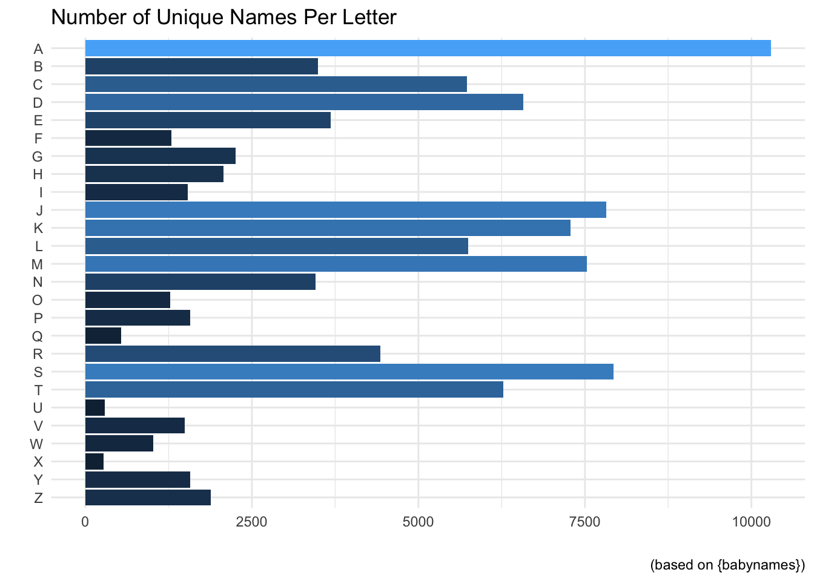
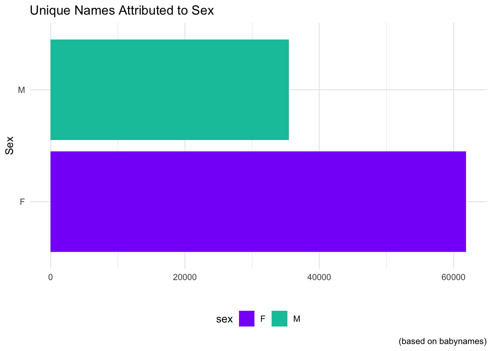
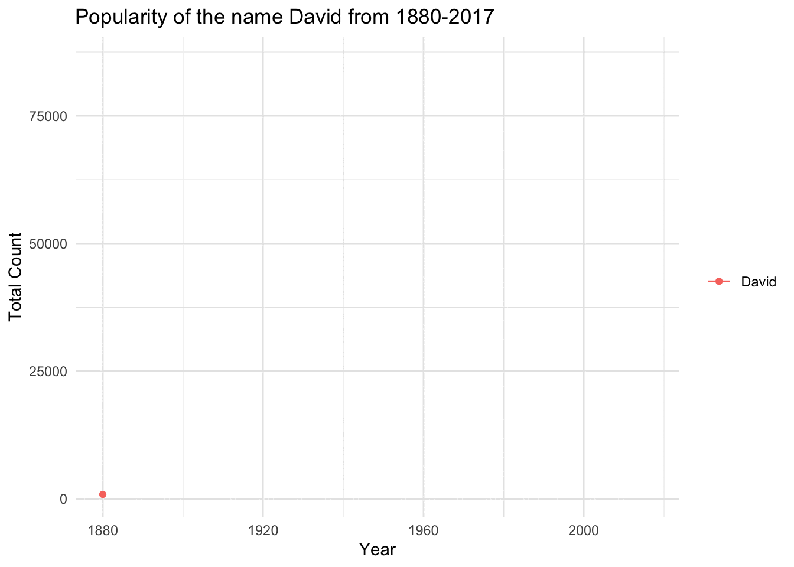

We will be using the babynames dataset to explore the dplyr and ggplot2 package.
First, let us take a look at the babynames dataset.
library(stringr)library(gganimate)library(ggplot2)library(babynames)library(dplyr)library(forcats)# Preview of what the dataset looks like head(babynames)
# A tibble: 6 × 5
year sex name n prop
<dbl> <chr> <chr> <int> <dbl>
1 1880 F Mary 7065 0.0724
2 1880 F Anna 2604 0.0267
3 1880 F Emma 2003 0.0205
4 1880 F Elizabeth 1939 0.0199
5 1880 F Minnie 1746 0.0179
6 1880 F Margaret 1578 0.0162
The table is structured in the following:
Year: The year the name was recorded
Name: The assigned sex of the recorded individual
n: The number of recorded people with the name
prop: n divided by total number of applicants in that year, which means proportions are of people of that gender with that name born in that year 1
There are a myriad of questions we could ask here!
How many unique names are there?
What is the most common name?
Do Male or Females represent the majority of unique names?
How many unique names do each letter of the alphabet account for?
How many unique names are there?
We will need to use dplyr and distinct in order to find the number of unique names, or else we will run into an issue in which multiple instances of a name will be counted–thereby obscuring the actual number.
babynames |># Get data ready to be sorted by namegroup_by(name) |># Count how many times each name appearscount()
# A tibble: 97,310 × 2
# Groups: name [97,310]
name n
<chr> <int>
1 Aaban 10
2 Aabha 5
3 Aabid 2
4 Aabir 1
5 Aabriella 5
6 Aada 1
7 Aadam 26
8 Aadan 11
9 Aadarsh 17
10 Aaden 18
# ℹ 97,300 more rows
You can see from the n column that this is reporting mulitple instances of each name. This does inadvertedly answer one of our other questions:
Which name appears most often throughout the years from 1880-2017?
babynames |>group_by(name) |># Sort the data from largest to smallestcount(sort=T)
# A tibble: 97,310 × 2
# Groups: name [97,310]
name n
<chr> <int>
1 Francis 276
2 James 276
3 Jean 276
4 Jesse 276
5 Jessie 276
6 John 276
7 Johnnie 276
8 Joseph 276
9 Lee 276
10 Leslie 276
# ℹ 97,300 more rows
It is also helpful to understand that this represents the number of occurrences throughout the years, it does not tell us the associated n’s with each name, we will do that soon!
Back to our original question: we need to remove all instances of a repeated name. We can do this with the distinct function.
distinct uses the following argurments:
data - What variable do you want to collect distinct values from?
.keep_all(logical) - Can either be TRUE/T or FALSE/F which determines whether the other variables should remain.
Here is an example using generated data first:
# Take a sample of letters from the alphabet with replacementx <-sample(letters,50,replace = T)y <-round(runif(50,5,100))# Prevent the string constants from being treated as factorsxy <-data.frame(x,y,stringsAsFactors = F)# Find the distinct valuesxy |>distinct(x)
x
1 l
2 k
3 m
4 e
5 y
6 w
7 q
8 f
9 z
10 t
11 r
12 d
13 h
14 g
15 b
16 o
17 x
18 n
19 j
20 u
21 i
22 a
23 v
You will notice that we lost everything in the y column! We need to use the .keep_all() argument.
# Take a sample of letters from the alphabet with replacementx <-sample(letters,50,replace = T)y <-round(runif(50,5,100))# Prevent the string constants from being treated as factorsxy <-data.frame(x,y,stringsAsFactors = F)# Find the distinct valuesxy |>distinct(x,.keep_all = T) |>group_by(x) |>arrange(x)
# A tibble: 21 × 2
# Groups: x [21]
x y
<chr> <dbl>
1 a 51
2 c 33
3 d 72
4 e 7
5 g 71
6 i 72
7 k 6
8 l 21
9 m 85
10 n 56
# ℹ 11 more rows
So now we will do the same with the babynames dataset to find the number of distinct names.
babynames |># Remove all duplicated names, but keep the other variablesdistinct(name,.keep_all = T)
# A tibble: 97,310 × 5
year sex name n prop
<dbl> <chr> <chr> <int> <dbl>
1 1880 F Mary 7065 0.0724
2 1880 F Anna 2604 0.0267
3 1880 F Emma 2003 0.0205
4 1880 F Elizabeth 1939 0.0199
5 1880 F Minnie 1746 0.0179
6 1880 F Margaret 1578 0.0162
7 1880 F Ida 1472 0.0151
8 1880 F Alice 1414 0.0145
9 1880 F Bertha 1320 0.0135
10 1880 F Sarah 1288 0.0132
# ℹ 97,300 more rows
Again we see the same 97,310 we saw previously! This tells us that the function worked. Now let us try to answer the following question:
How many unique names do each letter of the alphabet account for?
For this we will need to create a new variable: sw, that represents the letter the name starts with.
We will do this using muatate and regular expressions, which are covered here. We will then need to repeat what we did by only returning the distinct names in the set.
When the data is in this format, we will then group_by the new variable, sw and count.
babynames |># Create new column that looks for the start of each namemutate(sw=unlist(str_match_all(name,"^."))) |># Remove duplicate namesdistinct(name,.keep_all = T) |># Sort by the starting lettergroup_by(sw) |># Sort by largest to smallestcount(sort=T)
# A tibble: 26 × 2
# Groups: sw [26]
sw n
<chr> <int>
1 A 10292
2 S 7931
3 J 7817
4 M 7529
5 K 7283
6 D 6574
7 T 6278
8 L 5744
9 C 5731
10 R 4429
# ℹ 16 more rows
Awesome! We can see that the letter A dominates the other letters.
Now we can throw this into a graph:
babynames |>mutate(sw=unlist(str_match_all(name,"^."))) |>distinct(name,.keep_all = T) |>group_by(sw) |>count(sort=T) |># fct_rev will make it A-Z rather than Z-Aggplot(aes(fct_rev(sw),n,fill=n)) +# Use a bar chartgeom_bar(stat="identity") +# Flip for better viewcoord_flip() +# Fill based on categoryscale_fill_continuous() +# Super cool themetheme_minimal() +# Remove legend and axis tickstheme(legend.position ="none",axis.ticks =element_blank())+# No need for axis labels, give title and captionlabs(x="",y="",title="Number of Unique Names Per Letter",caption="(based on {babynames})")

Cool!
Now let us take a look at how many unique names are Male and how many are Female.
babynames |>mutate(sw=unlist(str_match_all(name,"^."))) |>distinct(name,.keep_all = T) |># Sort by sex for easy filteringgroup_by(sex) |># Get the number of each sexcount() |>ggplot(aes(sex,n,fill=sex)) +geom_bar(stat="identity") +coord_flip() +theme_minimal()+theme(axis.ticks =element_blank(),legend.position ="bottom")+labs(x="Sex",y="",title="Unique Names Attributed to Sex",caption="(based on babynames)")+# Manually fill colorsscale_fill_manual(values=c("#8700F9","#00C4AA"))

We can see that females have almost double the amount of unique names!
While going through the dataset I noticed that even after removing duplicate names I was still seeing name doubles. I realized that this was because some exist have both male and female owners.
The arranging of this particular question was a little difficult for me so I went over to Reddit where a helpful user, PM_ME_CAREER_CHOICES was able to guide me in the right direction.
babynames |>distinct(sex,name,.keep_all = T) |>group_by(name) |>count() |># If a name is truly unique it should be n = 1filter(n ==2)
# A tibble: 10,663 × 2
# Groups: name [10,663]
name n
<chr> <int>
1 Aaden 2
2 Aadi 2
3 Aadyn 2
4 Aalijah 2
5 Aaliyah 2
6 Aaliyan 2
7 Aamari 2
8 Aamir 2
9 Aaren 2
10 Aareon 2
# ℹ 10,653 more rows
We can see from this table that there are 10,763 names that have both male and female owners. Pretty cool!
What name(s) has the most owners (dead and alive)
Next we can take a look at what names have the most number of owners.
We will do this by summing up every occurence of a name and then sorting them to get each names total count.
babynames |>group_by(sex,name) |># Create column that adds up every n instance of a namesummarise(Total=sum(n)) |># Arrange in descending order the total number arrange(desc(Total))
`summarise()` has grouped output by 'sex'. You can override using the `.groups`
argument.
# A tibble: 107,973 × 3
# Groups: sex [2]
sex name Total
<chr> <chr> <int>
1 M James 5150472
2 M John 5115466
3 M Robert 4814815
4 M Michael 4350824
5 F Mary 4123200
6 M William 4102604
7 M David 3611329
8 M Joseph 2603445
9 M Richard 2563082
10 M Charles 2386048
# ℹ 107,963 more rows
Let’s see if we answered all of the questions!
How many unique names are there?
There are 97,310 unique names.
What is the most common name?
The most common name, or the name with the most owners appears to be James–with a whopping 5,150,472!
Do Male or Females represent the majority of unique names?
Females dominate the name ownership game with 61,832.
How many unique names do each letter of the alphabet account for?
Since there are 26 values–I’ll point you in the direction of the graph!
Let’s finish up with a animated graph using the gganimate package.
babynames |># Choose Specifc Namefilter(name=="David") |># Choose Sex (we know ~10% of names are M and F)filter(sex=="M") |># Notice how we group by name, so the line will followggplot(aes(year,n,group=name,color=name)) +# Plot the pointsgeom_point() +# Plot a line to connect the pointsgeom_line() +# Cool Themetheme_minimal() +labs(y="Total Count",x="Year",title=paste("Popularity of the name David from 1880-2017")) +# Remove ticks and legendtheme(axis.ticks =element_blank(),legend.title =element_blank()) +# gganimate will use this to go from each year as its own graphtransition_reveal(year)
`geom_line()`: Each group consists of only one observation.
ℹ Do you need to adjust the group aesthetic?
`geom_line()`: Each group consists of only one observation.
ℹ Do you need to adjust the group aesthetic?

babynames |>filter(name=="David") |># Choose Sex (we know ~10% of names are M and F)filter(sex=="M") |># Notice how we group by name, so the line will followggplot(aes(year,n,group=name,color=name)) +# Plot the pointsgeom_point() +# Plot a line to connect the pointsgeom_line() +# Cool Themetheme_minimal()